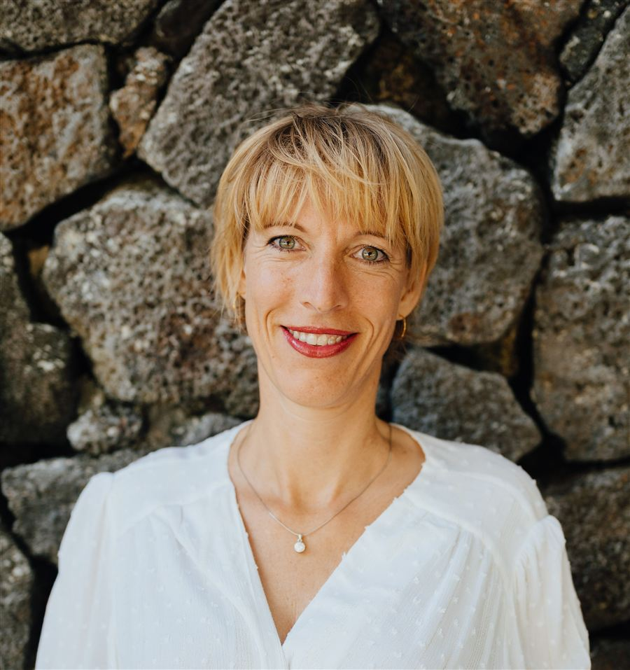

Bewusstseins-Mentorin · Utting am Ammersee
Wer bist du, wenn du niemand sein musst?
Wenn niemand etwas von dir braucht, will oder erwartet. Wenn du nichts erklären, nichts darstellen, nichts kontrollieren musst — wer bist du dann? Vielleicht hast du schon so vieles versucht und drehst dich trotzdem im Kreis. Das ist keine Schwäche. Das ist dein Wendepunkt.
- 10
- Jahre auf dem schamanischen Weg
- 19
- bereiste Länder — gelebte statt gelesene Erfahrung
- 0 €
- für das erste, unverbindliche Gespräch
- 1:1
- individuelle Begleitung, kein Gruppenprogramm
Kennst du, oder?
Du funktionierst. Aber du lebst gerade nicht wirklich.
Du bist erschöpft und hast gerade keine Perspektive — findest dich immer wieder am selben Punkt.
Du weißt gerade nicht, wie es weitergehen soll, und fühlst dich in dir selbst gefangen.
Du hast schon so viel ausprobiert — und willst nicht noch ein Tool, noch eine Methode, noch ein To-do.
Und jetzt?
Es gibt einen Raum, in dem du nicht funktionieren musst. In dem du dich zeigen kannst — ohne dich zu erklären, ohne Scham. Kein Beurteilen, kein Bewerten, kein Verbessern. Sein.
Ich halte diesen Raum für dich — individuell, ohne festes Programm, ohne Tools von der Stange. Damit du herausfinden kannst, wer du bist, wenn du niemand sein musst. Das Erstgespräch ist kostenfrei und unverbindlich.

Mein Weg
Von der Überfliegerin zum Boden unter den Füßen
Von der Überfliegerin zum Burnout. Von der erfolgreichen Unternehmerin zu einer Frau, die nicht wusste, wovon sie den nächsten Einkauf bezahlen soll. Von der lebenslustigen Partymaus zu Depressionen mit spürbaren körperlichen Schmerzen. Ich habe Grenzen überschritten und viele unterschiedliche Versionen von mir gelebt — in jeder Beziehung.
„Mein größter Lehrer waren die Momente, in denen ich am Boden lag — und mein Leben, genau so wie es ist."
Ich bin gereist, um mir selbst näherzukommen: knapp zwei Jahre im VW-Bus mit meinen Söhnen, 19 Länder. Unzählige Ausbildungen haben mich Stück für Stück geformt. Seit zehn Jahren gehe ich den schamanischen Weg und reise bis heute mit einer der ältesten Schamaninnen der Welt. Ich weiß, wie ich immer wieder zu mir finde — und genau hier begleite ich dich.
Für wen (und für wen nicht)
Damit wir beide wissen, ob es passt
Du bist hier richtig, wenn …
- … du spürst, dass etwas sich ändern muss, aber nicht weißt, wo du anfangen sollst.
- … du bereit bist, wirklich hinzuschauen — auch wenn es unbequem wird.
- … du dir einen Raum ohne Bewertung wünschst — individuell, ohne Standardprogramm.
Eher nicht, wenn …
- … du eine schnelle Anleitung mit fixen Schritten suchst.
- … du dich in akuter Krise befindest und ärztliche oder psychotherapeutische Hilfe brauchst (siehe Hinweis unten).
- … du eine medizinische Diagnose oder Behandlung suchst.
Ablauf
In drei Schritten zueinander finden
-
Kontakt
Du schreibst mir kurz, worum es geht, oder buchst direkt einen Termin im Kalender.
-
Kostenfreies Erstgespräch
Rund 30 Minuten, in denen wir uns kennenlernen und schauen, ob es zwischen uns passt.
-
Begleitung
Individuell auf dich abgestimmt — Umfang und Rhythmus besprechen wir gemeinsam.
Stimmen
Was Menschen erlebt haben, die diesen Raum genutzt haben
Mir ist einiges bewusster geworden. Ich kann anders umgehen mit Dingen oder Situationen. Die Begleitung war sehr einfühlsam, ehrlich und offen.
Sybille B.
Ich kam voller Anspannung, Scham und innerer Leere. Heute fühle ich Wärme, Ruhe und eine neue innere Sicherheit — sogar in Konfliktsituationen.
Carolin W.
Heute kann ich mit tiefer Ruhe, Zufriedenheit, Gelassenheit und vor allen Dingen Freude mein Leben genießen.
Steffi H.
Häufige Fragen
Bevor du schreibst
Was passiert im kostenfreien Erstgespräch?
Wir lernen uns in rund 30 Minuten kennen. Du erzählst, was dich gerade beschäftigt, ich erkläre, wie ich arbeite — und wir spüren gemeinsam, ob es passt. Keine Verpflichtung, kein Verkaufsgespräch.
Ist das Therapie oder Medizin?
Nein. Meine Arbeit als Mentorin und Schamanin versteht sich als Begleitung auf deinem persönlichen Weg und ersetzt keine medizinische oder psychotherapeutische Behandlung. Bei akuten Beschwerden wende dich bitte zusätzlich an eine Ärztin/einen Arzt oder Psychotherapeutin/Psychotherapeuten.
Wie läuft die Begleitung ab — online oder vor Ort?
[KLÄREN: Format der Sitzungen — vor Ort in Utting am Ammersee, online oder beides — bitte mit Sibylle abstimmen.]
Was, wenn es sich am Ende doch nicht richtig anfühlt?
Dann sagst du das einfach. Es gibt keinen Druck, weiterzumachen — der Raum ist für dich da, nicht andersherum.
Was kostet die Begleitung nach dem Erstgespräch?
[KLÄREN: Honorar/Preisstruktur — auf der Altseite nicht angegeben, bitte mit Sibylle klären.]
Wichtiger Hinweis: Befindest du dich in einer akuten Krise, wende dich bitte sofort an: Notruf 112 · Telefonseelsorge 0800 111 0 111 · Krisendienst Bayern 0800 655 3000. Diese Website ersetzt keine medizinische oder psychotherapeutische Versorgung.
Kontakt
Bereit für den ersten Schritt?
Schreib mir kurz, worum es geht, oder buche direkt dein kostenfreies Erstgespräch im Kalender. Ich melde mich innerhalb von 24 Stunden persönlich bei dir.